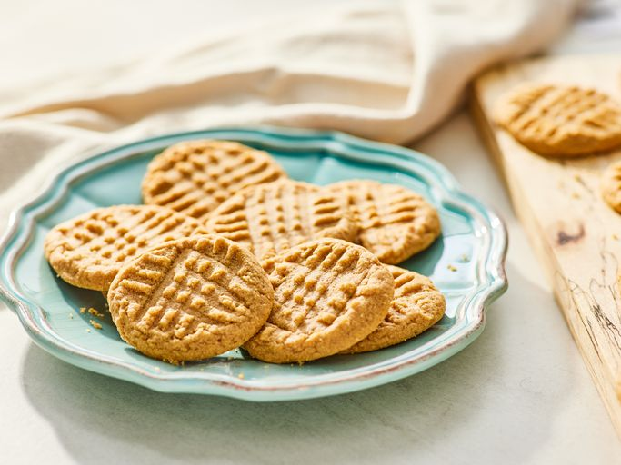

Three Ingredient Delectable Peanut Butter Cookies

Description
These three ingredient peanut butter cookies are a quick and easy treat that is sure to satisfy your sweet tooth. They are made with just peanut butter, sugar, and an egg, and can be whipped up in no time. The cookies are soft, chewy, and all the peanut butter flavor you want. They are perfect for a snack or dessert, but there's one concern which is that both kids and adults will be left wanting more!
- 1 cup peanut butter
- 1 cup white sugar
- 1 egg
Instructions
- Preheat oven to 350 degrees F (175 degrees C).
- Mix peanut butter, sugar, and egg together in a bowl until smooth and well combined.
- Drop spoonfuls of dough onto a baking sheet lined with parchment paper.
- Flatten each cookie with a fork, making a crisscross pattern.
- Bake in preheated oven for 10 minutes, or until cookies are set and slightly golden around the edges.
- Let cookies cool on baking sheet for 5 minutes, then transfer to a wire rack to cool completely.
- Enjoy your delicious peanut butter cookies!
Back to Home